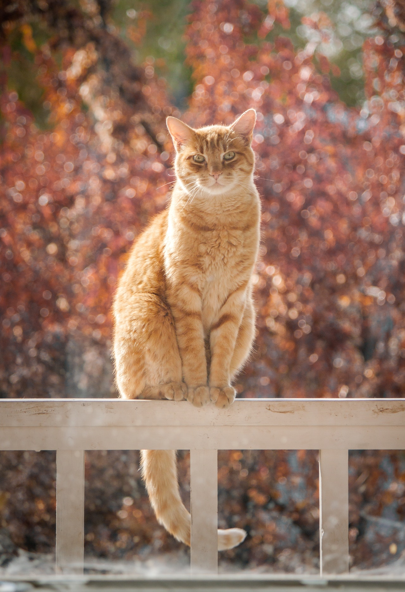

Mascotas
Poncho
Cachorros en adopción, Perros en capacitación.
8 meses
Oreo
Cachorros en adopción, Perros en capacitación.
5 meses
Botas
Cachorros en adopción, Perros en capacitación.
3 meses

Blanco
Cachorros en adopción, Perros en capacitación.
3 años
Firulais
Cachorros en adopción, Perros en capacitación.
3 años
Boby
Cachorros en adopción, Perros en capacitación.
5 años
Garfield
Gatos en adopción, Felinos en capacitación.
3 meses
Ojitos
Gatos en adopción, Felinos en capacitación.
2 meses
Sargento
Gatos en adopción, Felinos en capacitación.
3 meses

Gringo
Gatos en adopción, Felinos en capacitación.
1 año
Pirata
Gatos en adopción, Felinos en capacitación.
2 años
Manchas
Gatos en adopción, Felinos en capacitación.
2 años